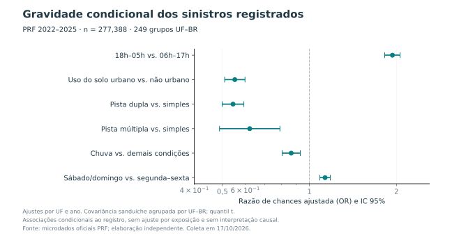
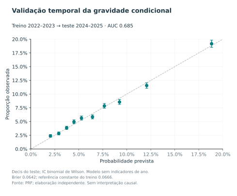
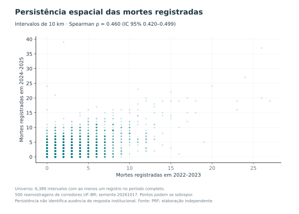

Relatório independente com dados oficiais coletados em 17 de outubro de 2026. Finalidade: exploração científica e preparação de avaliação acadêmica.
Escopo: resultados condicionais aos registros PRF. Não se estima sub-registro, risco por veículo-quilômetro, efeito causal de concessão ou omissão institucional. O SNV 202604A é uma referência espacial retrospectiva.
Foram analisadas 278,103 ocorrências de 2022 a 2025, com 23,274 mortes e 77,521 feridos graves. Não foram encontrados IDs duplicados dentro de cada arquivo anual. Os totais refletem a versão baixada e podem divergir de publicações anteriores.
| ano | ocorrencias | mortos | feridos_graves | feridos_leves | fatais |
|---|---|---|---|---|---|
| 2022 | 64606 | 5441 | 18173 | 54892 | 4664 |
| 2023 | 67766 | 5627 | 18958 | 59505 | 4858 |
| 2024 | 73202 | 6163 | 20372 | 64223 | 5225 |
| 2025 | 72529 | 6043 | 20018 | 63532 | 5210 |
Regressão logística por máxima verossimilhança, desfecho mortos > 0, ajuste por seis características observáveis, UF e ano; 277,388 ocorrências e 249 grupos UF–BR. Covariância sanduíche agrupada, correção finita, quantil t. Foram excluídas 715 ocorrências por ausência ou inadequação dos campos necessários.

As associações não são efeitos de intervenção. Em particular, a estimativa para chuva não sustenta benefício protetivo: composição, exposição, velocidade e seleção dos registros não estão identificadas pelo modelo.
| term | beta | se | odds_ratio | low | high | p |
|---|---|---|---|---|---|---|
| noite | 0.6610 | 0.0312 | 1.9368 | 1.8215 | 2.0595 | 0.0000 |
| urbano | -0.5940 | 0.0412 | 0.5521 | 0.5090 | 0.5988 | 0.0000 |
| dupla | -0.6084 | 0.0438 | 0.5442 | 0.4992 | 0.5933 | 0.0000 |
| multipla | -0.4755 | 0.1222 | 0.6216 | 0.4887 | 0.7907 | 0.0001 |
| chuva | -0.1451 | 0.0367 | 0.8649 | 0.8046 | 0.9298 | 0.0001 |
| fim_semana | 0.1246 | 0.0211 | 1.1327 | 1.0866 | 1.1807 | 0.0000 |
Um modelo separado foi ajustado em 2022–2023, sem indicadores de ano, e aplicado a 2024–2025. Teste com 145,375 ocorrências: AUC 0.6846; Brier 0.06416; Brier da referência constante calculada no treino 0.06661. Discriminação é moderada; não se trata de ferramenta validada para decisão operacional.

Nos 6,389 intervalos UF–BR de 10 km com ao menos um registro no período completo, a correlação de Spearman entre as mortes de 2022–2023 e 2024–2025 foi 0.4596, IC 95% [0.4204, 0.4991]. Intervalo percentílico de 500 reamostragens de corredores UF–BR; semente 20261017. O universo é condicionado à presença em ao menos um ano, inclusive no futuro em relação ao primeiro biênio, e não é um censo de toda a malha.

O resultado mostra associação temporal, sem demonstrar ausência de intervenção. Não houve avaliação de efeito antes e depois nem inferência de que o ciclo PDCA se interrompeu.
O SNV 202604A contém 7,664 trechos. 276,432 de 278,103 ocorrências (99.40%) tiveram correspondência única em eixo principal por UF, BR e intervalo [início,fim). Os trechos não operacionais PLA/LEN, acessórios e jurisdições não federais foram retirados apenas do diagnóstico de zeros. A administração corresponde a 2026; não foi reconstruída retrospectivamente.
| ano | admin | trechos | sem_registro | ocorrencias | mortos | extensao |
|---|---|---|---|---|---|---|
| 2022 | Administração federal no SNV 2026 | 3668 | 1333 | 28901 | 3151 | 61255.9000 |
| 2022 | Concessão no SNV 2026 | 1211 | 198 | 32267 | 2108 | 17256.4000 |
| 2022 | Outros arranjos no SNV 2026 | 111 | 60 | 1590 | 77 | 902.9000 |
| 2023 | Administração federal no SNV 2026 | 3668 | 1307 | 30288 | 3195 | 61255.9000 |
| 2023 | Concessão no SNV 2026 | 1211 | 189 | 34497 | 2285 | 17256.4000 |
| 2023 | Outros arranjos no SNV 2026 | 111 | 53 | 1284 | 71 | 902.9000 |
| 2024 | Administração federal no SNV 2026 | 3668 | 1292 | 33440 | 3746 | 61255.9000 |
| 2024 | Concessão no SNV 2026 | 1211 | 192 | 36640 | 2237 | 17256.4000 |
| 2024 | Outros arranjos no SNV 2026 | 111 | 53 | 1408 | 88 | 902.9000 |
| 2025 | Administração federal no SNV 2026 | 3668 | 1290 | 32554 | 3602 | 61255.9000 |
| 2025 | Concessão no SNV 2026 | 1211 | 199 | 37092 | 2262 | 17256.4000 |
| 2025 | Outros arranjos no SNV 2026 | 111 | 54 | 1391 | 85 | 902.9000 |
Os zeros são ausências de registros associados ao cadastro de referência. Não equivalem a sinistros ocultos nem são ajustados por tráfego. Também não representam reprodução exata da amostra preliminar da autora.
| ano | linhas_brutas | ocorrencias | duplicados | ids_conflitantes | mortos | feridos_graves | feridos_leves | sinistros_fatais | sem_vitimas | classificacao_ausente | classificacao_divergente | localizacao_invalida | coordenada_invalida | data_invalida | ano_divergente | contagem_vitimas_divergente |
|---|---|---|---|---|---|---|---|---|---|---|---|---|---|---|---|---|
| 2022 | 64606 | 64606 | 0 | 0 | 5441 | 18173 | 54892 | 4664 | 11506 | 1 | 0 | 199 | 0 | 0 | 0 | 3547 |
| 2023 | 67766 | 67766 | 0 | 0 | 5627 | 18958 | 59505 | 4858 | 10963 | 1 | 0 | 160 | 0 | 0 | 0 | 3767 |
| 2024 | 73202 | 73202 | 0 | 0 | 6163 | 20372 | 64223 | 5225 | 11782 | 1 | 0 | 189 | 1 | 0 | 0 | 3887 |
| 2025 | 72529 | 72529 | 0 | 0 | 6043 | 20018 | 63532 | 5210 | 11138 | 1 | 0 | 167 | 0 | 0 | 0 | 3823 |
A divergência aritmética de pessoas sinaliza casos para investigação. Não houve imputação nem correção automática. A classificação de gravidade foi derivada de mortos e feridos; o campo textual original foi preservado na base limpa.
Foram inspecionados cadastros de equipamentos, concessões, investimentos e passagens em praças de pedágio. No cadastro de trechos, UF apareceu com códigos numéricos em vez de siglas; não foi presumida uma conversão. Os volumes de praça representam passagens e não foram usados como VMD por trecho ou como denominador para comparar gestão direta e concessões.
VMD dos dois sentidos × extensão estimada × dias do ano; taxas por 100 milhões de veículos-km. Universo federal principal pavimentado ou duplicado. O VMD 2025 usa julho/2024–junho/2025. A exposição é modelada e sua incerteza não entra nos ICs.
| ano | admin | segmentos | sinistros | mortos | exposicao | taxa_sinistros | taxa_mortes | zeros |
|---|---|---|---|---|---|---|---|---|
| 2022 | Administração federal no cadastro PNCT | 3077 | 30153 | 3266 | 70671505553.4000 | 42.6664 | 4.6214 | 776 |
| 2022 | Concessão no cadastro PNCT | 851 | 27221 | 1651 | 53231034742.7500 | 51.1375 | 3.1016 | 52 |
| 2022 | Outros arranjos | 61 | 1032 | 56 | 3431432744.0000 | 30.0749 | 1.6320 | 31 |
| 2023 | Administração federal no cadastro PNCT | 3044 | 31119 | 3278 | 72765239373.0000 | 42.7663 | 4.5049 | 720 |
| 2023 | Concessão no cadastro PNCT | 885 | 29384 | 1833 | 57429528510.0000 | 51.1653 | 3.1917 | 75 |
| 2023 | Outros arranjos | 74 | 904 | 56 | 4062950451.5000 | 22.2498 | 1.3783 | 30 |
| 2024 | Administração federal no cadastro PNCT | 3839 | 32027 | 3606 | 74503163313.0000 | 42.9874 | 4.8401 | 1038 |
| 2024 | Concessão no cadastro PNCT | 1089 | 29458 | 1749 | 57565030464.0000 | 51.1734 | 3.0383 | 152 |
| 2024 | Outros arranjos | 99 | 1033 | 78 | 4794600183.0000 | 21.5451 | 1.6268 | 39 |
| 2025 | Administração federal no cadastro PNCT | 3843 | 31370 | 3531 | 75602129566.5000 | 41.4935 | 4.6705 | 1064 |
| 2025 | Concessão no cadastro PNCT | 1088 | 29512 | 1785 | 58540464154.5000 | 50.4130 | 3.0492 | 153 |
| 2025 | Outros arranjos | 99 | 1035 | 68 | 4857692472.5000 | 21.3064 | 1.3998 | 41 |
| term | beta | se | irr | low | high | p |
|---|---|---|---|---|---|---|
| concessao | 0.3742 | 0.1047 | 1.4538 | 1.1828 | 1.7867 | 0.0004 |
| dupla | 0.3590 | 0.0853 | 1.4319 | 1.2106 | 1.6936 | 0.0000 |
| pesados_10pp | -0.0053 | 0.0276 | 0.9947 | 0.9420 | 1.0503 | 0.8470 |
| nao_simulavel | 1.2416 | 0.0587 | 3.4610 | 3.0831 | 3.8853 | 0.0000 |
| term | beta | se | irr | low | high | p |
|---|---|---|---|---|---|---|
| concessao | 0.1795 | 0.0845 | 1.1966 | 1.0132 | 1.4132 | 0.0346 |
| dupla | -0.1696 | 0.0828 | 0.8440 | 0.7170 | 0.9934 | 0.0414 |
| pesados_10pp | 0.0303 | 0.0184 | 1.0307 | 0.9940 | 1.0688 | 0.1017 |
| nao_simulavel | 0.5818 | 0.0550 | 1.7893 | 1.6058 | 1.9937 | 0.0000 |
A associação para mortes perde evidência estatística na análise sem segmentos não simuláveis. A comparação bruta e a ajustada podem ter sentidos diferentes; não há identificação causal de qualidade da governança.
| train_years | test_years | n_train | n_test | observed | predicted | mae | mean_poisson_deviance |
|---|---|---|---|---|---|---|---|
| [2022, 2023] | [2024, 2025] | 7857 | 9859 | 10671.0000 | 10810.0585 | 0.9781 | 1.5989 |
Scripts coletar.py, analisar.py, integrar_snv.py e publicar_resultados.py; pandas, NumPy, SciPy, Matplotlib e pyshp. SHA-256 dos arquivos no manifesto. Datas, exclusões e testes preservados. A versão do script principal está identificada nos metadados.